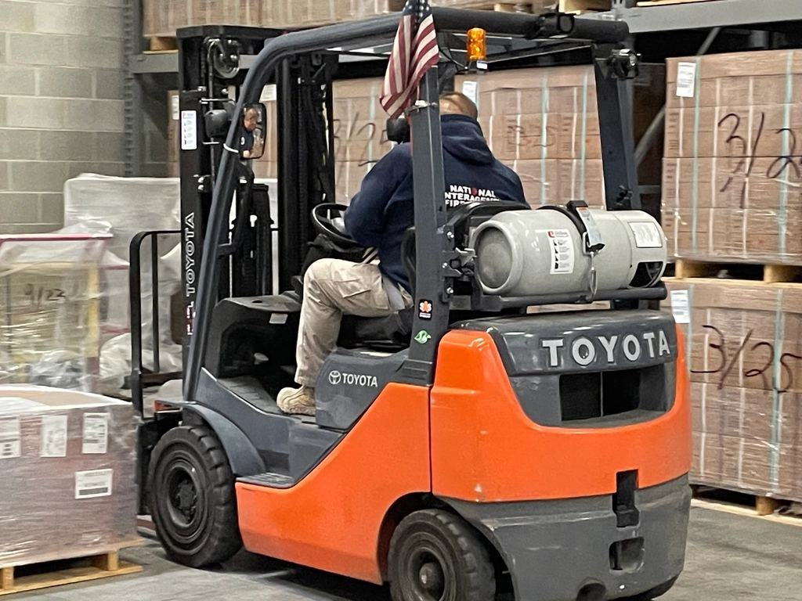
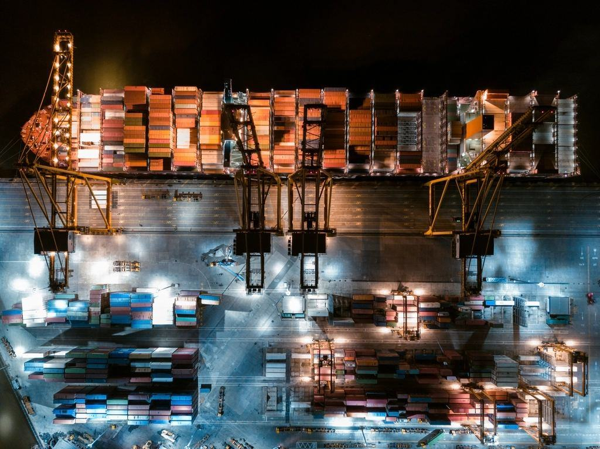
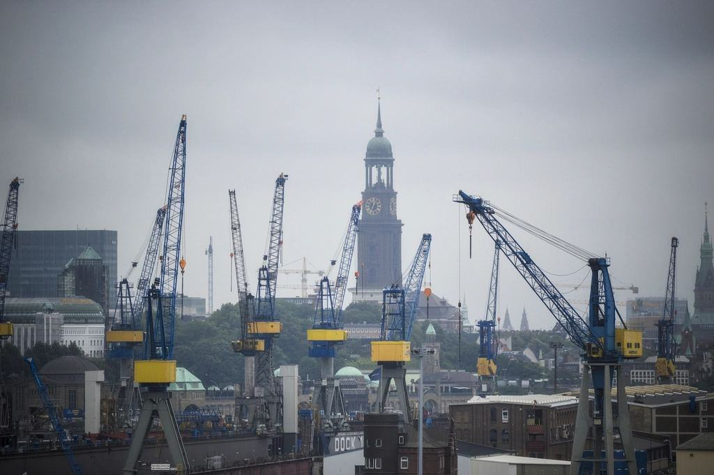

Om Maskinpoolen
Maskinpoolen började som den interna maskinavdelningen på ett valsverk i Borlänge. När verket bestämde sig för att lägga ut maskinerna 1999 köpte fyra av de anställda verksamheten, med 46 hjullastare och truckar och ett femårsavtal som enda kund. Avtalet har förnyats fem gånger sedan dess.
Vi äger, servar och byter ut hjullastare, truckar och teleskoplastare som står hos industrin i Dalarna år efter år – kunden betalar en fast månadskostnad och slipper verkstaden.
Maskinpoolen började som den interna maskinavdelningen på ett valsverk i Borlänge. När verket bestämde sig för att lägga ut maskinerna 1999 köpte fyra av de anställda verksamheten, med 46 hjullastare och truckar och ett femårsavtal som enda kund. Avtalet har förnyats fem gånger sedan dess.
I dag har vi 64 anställda och 310 maskiner placerade hos 41 industrikunder. Nästan ingen maskin kommer tillbaka till vår depå förrän den byts ut efter fem till sju år. I stället åker våra 22 servicetekniker ut i verkstadsbilar och servar på plats, ofta på nattskiftet när maskinen ändå står still.

Senaste nytt

52 maskiner och åtta eldrivna truckar i det nya avtalet.

Erfarenheter efter tre månader med en batteridriven 18-tonnare i Avesta.

Kortare inställelsetid för kunderna i västra Dalarna.

Drifttimmar, tomgång och stillestånd – vad siffrorna säger om er maskinpark.
Låt oss räkna på er maskinpark
Berätta hur många maskiner ni har och vilka skift ni kör, så bokar vi en genomgång på plats.
- Telefon
- 070-174 06 92
- E-post
- kontakt@maskinpoolen.se
- Öppettider
- Kontoret mån–fre 7–16. Service och haveri dygnet runt
Kontakta oss
- Kontor
- Tunavägen 212
781 73 Borlänge - Telefon
- 070-174 06 92
- E-post
- kontakt@maskinpoolen.se
- Öppettider
- Kontoret mån–fre 7–16. Service och haveri dygnet runt